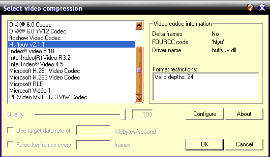
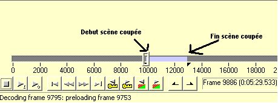
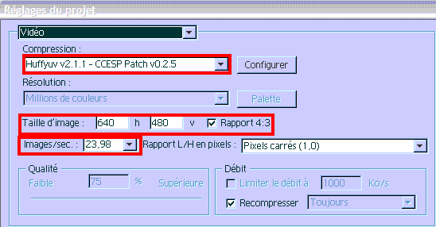
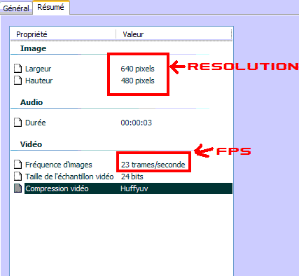
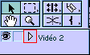
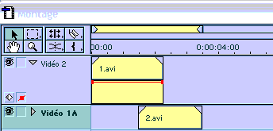
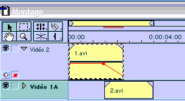
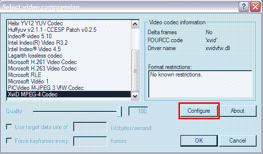
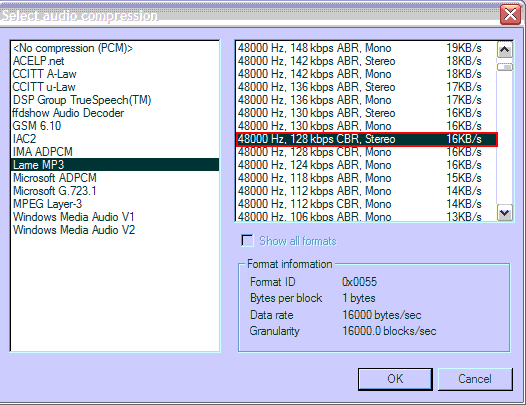

Bienvenue à vous, jeunes AMV-maker en herbe ! :D Dans ce tutoriel, je tenterai de vous apprendre à réaliser un AMV.
C'est quoi, un AMV ?
AMV signifie Anime Music Video. C'est un clip réalisé à partir d'animes synchronisées sur une musique choisie. Une variante de l'AMV est le MMV : Movie Music Video, réalisé à partir de films.
En rédigeant ce tuto, j'ai essayé de le faire le plus explicite possible. C'est pourquoi je ne vous montre qu'une seule façon de faire, celle qui me paraît la plus pratique et la plus facile. Bon : j'arrête mon blabla, il est temps de passer a l'action ! :soleil:
Voici la liste des logiciels dont vous aurez besoin. J'ai mis les plus utiles et confortables au niveau du travail, mais libre à vous d'en chercher d'autres.
Virtual dub
Adobe Première (ici la version 6.0, mais c'est assez semblable pour les autres versions)
La première étape dans votre grand voyage au pays de l'AMV-making. :D Pour ce faire, lancez le logiciel Virtual Dub.
Ensuite, faites File > Open vidéo file ; là, choisissez le chemin d'accès de votre vidéo et ouvrez-la.
Il faut maintenant configurer Virtual Dub. Allez dans Vidéo > Compression. Ici, nous allons choisir un codec.
Ziva, parle-moi meilleur ! o_O
Hey ! du calme! ^^ Un petite explication simple et rapide s'impose : une vidéo, c'est de l'image et du son. Vous devez bien vous douter que tout ça prend de la place en termes d'octets sur votre disque dur !
Eh bien le rôle du codec est de COmpresser / DECompresser les images et / ou le son (tout dépend du codec) afin de gagner de la place sur votre disque dur, rien de plus sorcier ! :magicien:
Reprenons : vous êtes maintenant dans la fenêtre de sélection de codecs. Il est conseillé de choisir le codec Huffyuv (disponible dans le pack AMVapp) puis faites OK.

Une fois cette opération (vraiment difficile, faut l'avouer) terminée, vous pouvez allez boire un coup. ^^
Ensuite, pour éviter de se compliquer la tâche à couper des scènes avec le son d'origine, nous allons enlever le son de la vidéo. Allez dans Audio et cochez No audio.
Dernière étape dans la configuration : la sauvegarder. Faites File et Save processing settings, cela vous évitera d'avoir à reconfigurer Virtual Dub à chaque fois.
Vous êtes maintenant prêts pour découper vos scènes (pas trop tôt :-° ). Pour découper vos scènes, utilisez ces 2 icônes :
.
Celle de gauche vous permet de choisir le début de la scène, celle de droite (tenez-vous bien) de choisir la fin de la scène.

Reste maintenant à enregistrer votre coupage. Faites File > Save as AVI, choisissez un dossier de destination et faites Enregistrer. Voilà ! Il ne vous reste plus qu'à répéter l'opération 1 000 000 fois :waw: (au moins ! :waw: :waw: ).
Petit conseil : évitez à tout prix de prendre des passages contenant des sous-titres ; c'est moche, un AMV plein de sous-titres. :p
Nous y voilà : la partie la plus intéressante, celle où votre talent sera la clé du succès. Pour cette partie, c'est Adobe Première que l'on va utiliser.
Lancez donc Adobe Première (non, pas par la fenêtre >_ ). Là, un tas de configurations s'offre à vous. Rassurez-vous, je ne vais pas vous laisser au milieu de ce bor...hum, schmilblik. :)
Pour commencer, choisissez Autre.
Ici, il va falloir configurer votre projet. Dans le menu déroulant allez dans Vidéo, choisissez le codec (encore un fois, huffyuv est fortement conseillé), entrez la résolution de vos vidéos ainsi que le FPS (nombre d'images par secondes).

Les zones que vous devez modifier sont encadrées en rouge.
Comment connaître la résolution et le FPS ?
Tout simplement en faisant un clic droit, Propriétés sur une de vos scènes coupées.

Une fois votre configuration terminée, cliquez sur OK. Là, un joli machin qui ressemble à un truc s'offre à vous. :p
Vous êtes ici dans la fenêtre de montage de Adobe Première. Nous allons voir à quoi correspondent les différentes zones.
1. Le chutier : c'est ici qu'apparaîtront vos scènes coupées. 2. Le moniteur : c'est dans cette fenêtre que vous pouvez lire votre montage au cours de sa création. 3. La timeline : l'endroit où tout se joue, c'est ici que vous disposerez vos scènes. 4. Propriété des scènes : cette zone vous permet de voir, en cliquant sur une de vos scènes, les effets spéciaux qui y figurent. 5. Répertoire des effets : ici, vous trouverez les effets vidéo, audio et les transitions.
Je dois vraiment retenir tout ce vocabulaire ? :o
Il est préférable en effet que vous le reteniez car je l'utiliserai dans la suite du tutoriel. Mais rien ne vous empêche de le noter sur un bout de papier. ;)
Pour commencer faites Fichier, Importer, Fichier. Et importez toutes vos scènes coupées. Faites de même pour l'audio.
Placez votre fichier audio dans Audio 1 (en bas de la Timeline) et décochez les haut-parleurs de Audio 2 et de Audio 3.
Maintenant reste à faire glisser vos vidéos sur les pistes vidéo 2, vidéo 1a et vidéo 1b et à faire votre montage !
Mais... je n'y connais rien, moi, à ce bidule, je vais jamais réussir à faire mon AMV ! :'(
Pas de panique, ça a l'air assez compliqué mais en réalité, il n'en est rien. Que les choses soient claires : votre premier AMV ne sera pas un chef d'oeuvre. Adobe Première nécessite un temps de prise en main assez important : au début, vous aurez certainement du mal, vous aurez peut-être même envie de tout laisser tomber (je suis passé par là).
Il faut persévérer dans l'AMV-making ! Ne pas se forcer à finir l'AMV en 3 jours (si ça doit prendre 2 mois, ça prendra 2 mois). Créer un AMV, c'est un loisir, de l'art, pas un devoir que vous devez rendre à un professeur. ^^
Bref, je vais quand même vous apprendre à utiliser un effet de base : la transparence afin que vous ne soyez pas totalement paumés. ^^
Le fondu enchaîné, un effet si basique et pourtant tellement utile. ^^
Si tu le dis... mais il sert à quoi cet effet, au juste ?
Bonne question. ^^ Le fondu enchaîné, c'est faire disparaître une scène pour qu'en apparaisse une autre en dessous. Une sorte de transition entre scènes, en gros. Ça ne vous paraît pas très clair ? Ce n'est pas grave, lisez cette partie et ça ira mieux à la fin. ;)
Premièrement, cet effet est uniquement disponible sur la piste vidéo 2. Commencez par cliquer sur le petit triangle afin de déployer la piste.

Une fois la piste déployée, assurez-vous que le petit carré rouge est bien coché. Nous allons faire un fondu enchaîné avec 2 scènes.

Comme vous pouvez le constater, il y a une bande rouge sur la scène 1.avi. C'est en manipulant cette fine bande que l'on active le fondu enchaîné. Vous pouvez cliquer sur cette ligne afin de créer un point d'ancrage. Nous faisons ensuite descendre la bande rouge vers la piste 2.avi.

Si vous essayez de lire la vidéo, vous constaterez que rien n'a changé. Allez donc dans Montage puis dans Zone de travail rendu. Attendez que la prévisualisation se termine et lisez votre vidéo.
Et là : Waouuuu ! o_O La vidéo 1.avi disparaît peu à peu au niveau où le trait rouge descend pour laisser place à la vidéo 2.avi.
Enfin ! Après des semaines (voire des mois) de dur labeur, votre montage est enfin fini ! :D
Il faut maintenant le sortir d'Adobe. La manip' est la suivante : Fichier > Exporter le montage > Séquence.... Si vous avez configuré votre Adobe comme il était indiqué au début de ce tutoriel, no problem.
Sinon, vous pouvez toujours reconfigurer. Assurez-vous que la compression est en huffyuv et exportez !
Et la voilà toute fraîche : votre vidéo de plusieurs Go !
Nous allons maintenant l'encoder, c'est-à-dire la compresser à l'aide d'un codec (vous vous doutez bien qu'un AMV de 2 Go, ce n'est pas normal o_O ).
Nous allons à nouveau utiliser Virtual Dub. Lancez Virtual Dub et ouvrez votre vidéo. Il va falloir une nouvelle configuration cette fois (et m*rde ! :-° ).
- Commençons par la compression : Vidéo > Compression et choisissez XviD (disponible lui aussi dans la pack AMVapp). Cliquez sur Configure.

Sélectionnez twopass - 1st pass et faites OK aux 2 fenêtres.
- Il faut maintenant encoder le son. S'il ne présente aucun défaut (saccades, ralentissements...) à la sortie d'Adobe, tant mieux, passez à l'étape suivante. Sinon dans Audio, au lieu de Source audio, sélectionnez wav audio puis sélectionnez votre son WAV.
- Maintenant, dans Audio, sélectionnez full processing mode (au lieu de direct stream copy).
Toujours dans Audio, allez dans Compression puis choisissez Lame MP3. Une liste s'affiche dans le cadre de droite. Choisissez 48000 Hz, 128Kbps CBR, stereo 16KB/s puis validez.

Faites Save as avi (après avoir sélectionné le début et la fin de votre vidéo, bien sûr :lol: ) et attendez... Une fois fini, vous avez fait votre 1ère PASS.
Retournez donc dans votre configuration vidéo puis dans la configuration d'Xvid, choisissez Twopass 2nd pass, et dans le cadre Target size (ou desired size), vous devez entrer la taille que fera votre vidéo en Mo et la multiplier par 1024.
Keskeçé ? o_O
Par exemple, vous voulez que votre vidéo fasse 40 Mo : 40 x 1024 = heu... calculatrice autorisée ! Donc = 40960. Entrez 40960 dans le cadre, faites OK et à nouveau Save as avi par dessus votre 1ère PASS. Une fois le 2e PASS terminé, il ne vous reste plus qu'une étape :
- Sautez dans tout les sens, hurlez, dansez, chantez : votre AMV est enfin fini ! Vous allez maintenant pouvoir en faire un autre ! :D
Vous voilà arrivés au bout. :p
Comme je l'ai dit dans ce tutoriel, l'AMV-making est une chose qui nécessite du temps pour pouvoir faire de bons trucs. Il arrive de se lasser d'un AMV que l'on fait. Dans ce cas-là, il suffit simplement de le laisser de côté et d'y revenir plus tard. Ça n'en sera que bénéfique pour le résultat final.
Adobe Première ne se laisse pas dompter facilement lui non plus. :diable: Il est toujours bon, lorsqu'on glandouille chez soi et qu'on n'a rien à faire (ben quoi :euh: ), de jouer avec Adobe afin de se familiariser avec la bête.
Je tiens aussi à remercier Slay de Anime Action sans qui ce tutoriel n'aurait jamais existé. :)
{kind=link}